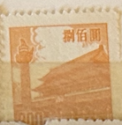
| SOURCE | TITLE| IMAGE MATCH | click to source page |
| Find Your Stamps Value | Gate of Heavenly Peace - 天安门 $800 Orange stamp price, value | 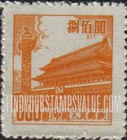 |
| eBay | CH14] NEC - 1950, NE269 TIEN AN MEN - FULL SHEET OF 80 STAMPS MINT | eBay | 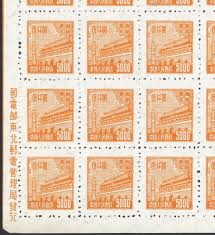 |
| Find Your Stamps Value | NORTHEAST CHINA: Gate of Heavenly Peace - 中国东北: 东北贴用: 天安门$5000 Orange stamp price, value |  |
| Miraheze | Tienanmen definitives - Stamp Encyclopedia | 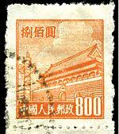 |
| eBay | Uncertified Red Chinese Stamps for sale | eBay | 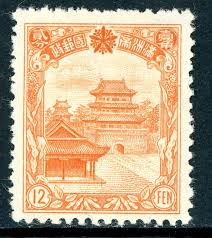 |
| Flickr | China forbidden palace sml (800) | Mark Morgan | Flickr | 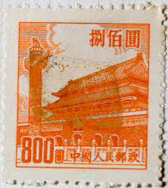 |
| eBay | VINTAGE 1946 STAMP AIRPLANE CHINESE WALL CHINA AVIATION | eBay | 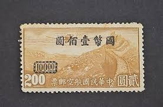 |
| eBay | Travelstamps: 1936-37 China Manchukuo Stamps Scott #94 - 12 Fen Mint MOGH | eBay | 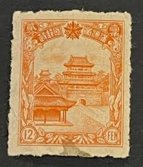 |
| Shutterstock | 3+ Thousand Beijing Stamp Royalty-Free Images, Stock Photos & Pictures | Shutterstock | 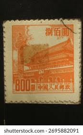 |
| Leski Auctions | PEOPLE'S REPUBLIC OF CHINA (PRC): 1950-51 Redrawn Gate of Heavenly Peace $800 red-orange & $2000 olive SG 1485 & 1486 marginal blocks of 4 with part-imprint, no gum as issued, Cat £2800 . | 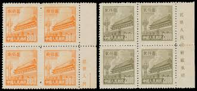 |
| eBay | Foochow | eBay | 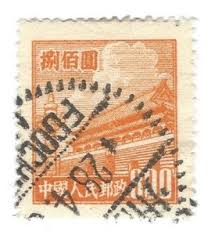 |
| Jay Smith & Associates | Jay Smith & Associates: World: Asia: Manchukuo Stamps |  |
| eBay | People's Republic of China Scott #90 Used | eBay | 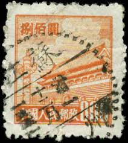 |
| eBay | China 1946 Manchukuo LO Pin Hsien Kerr 166.21 Mint H892 | eBay | 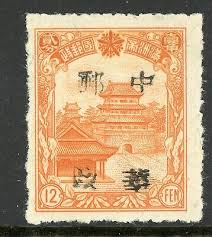 |
| eBay | People's Republic of China Scott #90 Pair Used PRC | eBay | 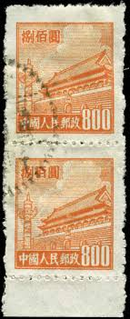 |
| LastDodo | Poort van de hemelse vrede 800 (1950) - China - Volksrepubliek - LastDodo | 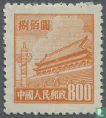 |
| eBay | Very RARE China error color GATES OF HEAVENLY PEACE SC95-100 void postage | eBay | 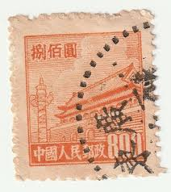 |
| eBay | PRC China Stamps: 1950 Gate of Heavenly Peace. 1st Issue SC 15 MNH, perf Fault | eBay | 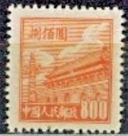 |
| eBay | 1950 NORTHEAST CHINA SC#1L171 2500 MNH NG VF | eBay | 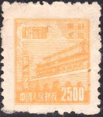 |
| Anyone know about Asian stamps? Can't find this one on Google lense : r/stamps | 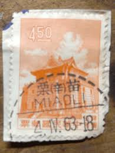 | |
| sellosmundo.com | Temple. Japan Asia ref. 7170 | 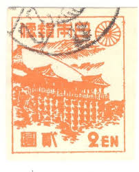 |
| Freestampcatalogue.com | Stamps from China People's Republic - Freestampcatalogue.com - The free online stampcatalogue with over 500.000 stamps listed. | 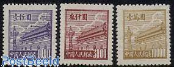 |
| eBay | Mint Never Hinged/MNH Orange Chinese Stamps for sale | eBay | 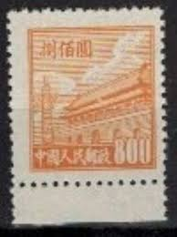 |
| eBay | 1949 Chinese Postal Stamp, 13, Train Mountain Workers. MNG, Not Canceled.No Gum. | eBay | 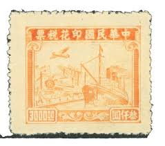 |
| Colnect | Japan : Stamps [Year: 1948] [1/4] : Colnect 📮 | 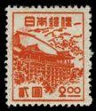 |
| eBay | PRC #15 1950 $800 Gate of Heavenly Peace No Gum as Issued MNH Orange SCV $12 | eBay | 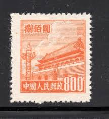 |
| Find Your Stamps Value | Value of 一分快3一分钟一开豹子和值技巧规律口诀破解（安装薇：509108810）快三大小单双预测分析规律破解作弊器.vgn stamps | 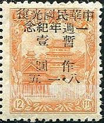 |
| Etsy | Kyoto Stamp Exhibition Souvenir Sheet of Five Japan Postage Stamps Issued 1947 - Etsy | 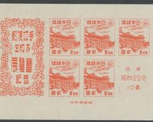 |
| eBay | 1950 china Tiananmen $5000 (printed Ed Unknown) | eBay | 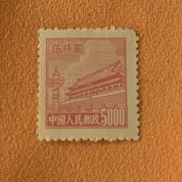 |
| Manchukuo Stamps | Manchukuo and Manchurian Stamps 1936 - Postal Agreement with Japan and Booklet Panes | 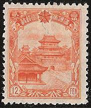 |
| eBay | Northeast China 1949 PRC Liberated $5,000 Gate Sc #1L164 UNWATERMARKED C826 | eBay | 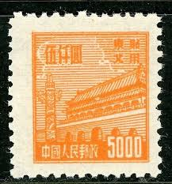 |
| eBay | $800 Gate of Heavenly Peace SC#90 A13 ~ China Post No. R4 ~ 3 Used | eBay | 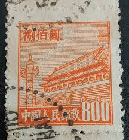 |
| eBay | China - North East China - 1950 Tiananmen - Gate of Heavenly Peace - 2,500 | eBay | 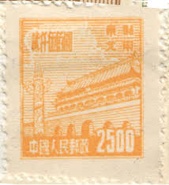 |
| eBay | CHINA Early revenue - mint - no gum as issued..............................B8582 | eBay | 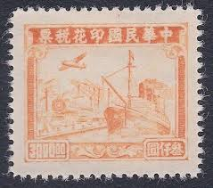 |
| eBay | 1950 NORTHEAST China Sc#1L171 $2500 MNG VF | eBay | 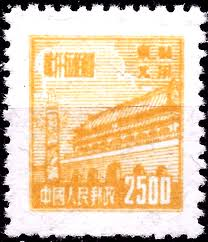 |
| Find Your Stamps Value | NORTHEAST CHINA: Gate of Heavenly Peace - 中国东北: 东北贴用: 天安门$5000 Orange stamp price, value | 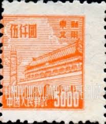 |
| HipStamp | China 1936 Manchukuo Fourth Definitives 12 Fen Orange VFU K130 | Asia - China, Stamp / HipStamp | 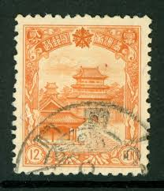 |
| Mercari | Unused Republic Of China Stamps. Not A | Mercari | 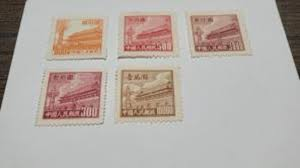 |
| eBay | Orange Japanese Stamps for sale | eBay | 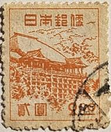 |
| eBay | MANCHUKUO 1936 Sc#94 12f Manchuria Temple Stamp MNH XF | eBay |  |
| PicClick | CHINA - "GATE Of Heavenly Peace" - Lot Of 9 Old Stamps - Unused!! $1.99 - PicClick | 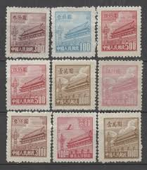 |
| Mystic Stamp Company | C12 - 1933 Republic of China - Mystic Stamp Company | 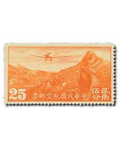 |
| Find Your Stamps Value | NORTHEAST CHINA: Gate of Heavenly Peace - 中国东北: 东北贴用: 天安门$2500 Yellow stamp price, value |  |
| eBay | P.R. CHINA 211 - Gate of Heavenly Peace "1954 6th Printing" (pa76500) | eBay |  |
| eBay | Orange Used Asian Stamps for sale | eBay | 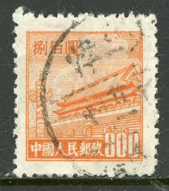 |
| Stampedia | stampedia JAPAN STAMP catalog | 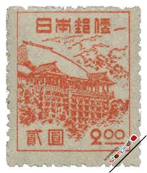 |
| HipStamp | China 1218 Chu Kwang Tower 1959 | Asia - China, General Issue Stamp / HipStamp | 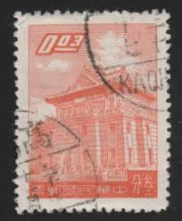 |
| Alamy | Shinto shrine on vintage japanese postage stamp Stock Photo - Alamy | 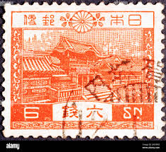 |
| Linns Stamp News | Statesman U.S. essays, proofs, trial colors and specimens, Fleischner U.S. in July 18-19 Kelleher auctions | 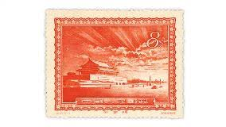 |
| eBay | China 1946 Manchukuo Local OP - TSITSIHAR-12f-Type 3 OP -Kerr #239.23 Mint H808 | eBay | 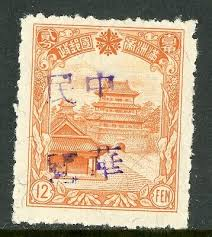 |
| Alamy | Republic of China Postage Stamp Stock Photo - Alamy | 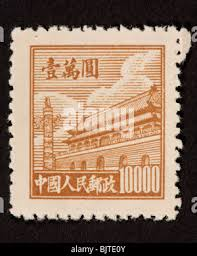 |
| eBay | Travelstamps: 1949-50 China Stamps #3L90 Mint No Gum NGAI Gate of Heavenly Peace | eBay | 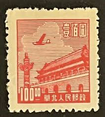 |
| eBay | Y 490 | eBay | 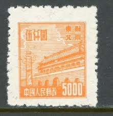 |
| eBay | Japan 367a sheet,MNH.Michel Bl.12. Kiyomizu Temple,Kyoto,1947, | eBay | 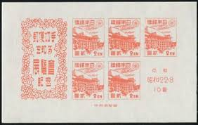 |
| Collection Hero | Rare And Collectible Stamps : 1946 China Value Guide - Price List | stamp Collectors Guide | |
| Alamy | Chu kwang tower hi-res stock photography and images - Alamy | |
| eBay | China -3c Orange "Chu Kwang Tower" Used - #3617 | eBay | |
| eBay | 1950 P.R.China, 800yuan Orange 4th Gate, Used With Canton-Dungguan Dater, #90. | eBay | |
| Colnect | China, People's Republic : Stamps [Year: 1950] [1/11] : Colnect 📮 |